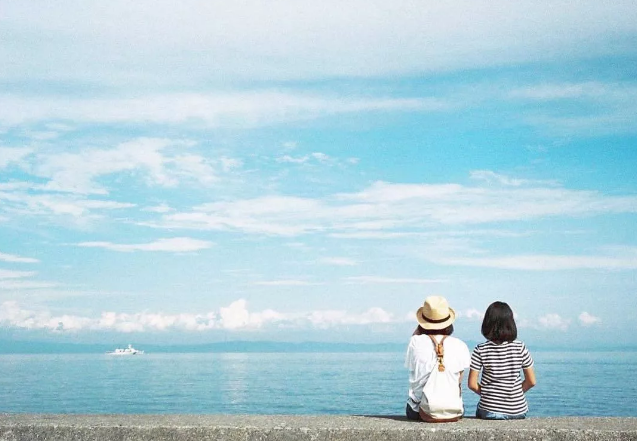

扫一扫，抖音热门技术分享
有一种人：待人友善，却总是独来独往
你是不是这样一种人：
待人接物非常友善，但总喜欢独来独往。
平时不喜欢和别人冲突，可以妥善处理和每一个人的关系。
但是大部分时间你都喜欢独处，很享受一个人的时光。
如果是，你就属于： 友善的孤独者。
对人友善是修养，独来独往是性格，两者并不冲突。
独来独往，并不意味着你不善于社交和表现。
相反你可以很自如的切换到侃侃而谈的模式，只是你对于在不相干的人群中表演，毫无兴趣。
你平时与人为善，能理解大多数人的行为，但并不去附和他们，不想被讨论，也不想去看别人的热闹。
你其实很温柔，但不向每个人展露，当然也不是每个人都能读懂你的温柔。
所以你选择只对少数人温柔，只对少数人热情，其他大多数的人，你保持礼貌和理性。
人性有一个基本需求，就是需要周围的人对自己有一种认同感，认同自己的状态，认同自己的成就，所以一般的人
需要通过社交来展示自己，这其实也是内心不够强大的表现。
而对一个内心强大的人来说，他们已经不需要从周围的人那里获得认同感，他们更需要的是自己对自己的认同，所以他们不再外求，宁可去内求。
独处，就是一个人开始内求的表现。
独来独往并不代表着孤单，反而这更容易让一个人放飞内心。
同样的道理，在人群中热热闹闹也不代表你被认同，那只是一种喧哗。
因此有句话说的好：孤独是一个人的狂欢，狂欢是一群人的孤独。
还有一种人，则属于“外向的孤独者”。
人多的时候，她们对外总是表现出一种活泼开朗，善于交际的状态，并且总给大家带来各种快乐，热情，时刻呈现出一种自信、正能量的积极印象。
但是每次曲终人散之后，他们就会进入到一种多愁善感的感性状态。
他们在独处的时候，很喜欢那种安静，但是在群体里不喜欢表现自己这一面，也不会刻意找人诉说。
实际上她们是在用嘻嘻哈哈的外在掩饰自己的孤独，故作洒脱其实是平衡内心的寂寞。
然而这些都无法救赎一个人，唯有内心强大，才是与自己、与社会相处的最好姿态。
我们还必须发现一个重要的社会现象：人的社交圈正在发生重大变化。
传统社会，由于受区域和现实条件的制约，每个人所处的圈子往往就是离自己最近的一帮人，比如同事，同行，同学，亲戚等等。
而随着互联网的发达，我们的圈子不再受现实条件区域的制约，那些有共同语言、志同道合的人，越来越容易聚集到一起了。
尽管你们可能是完全不同的行业，甚至你们天各一方，但是同样的认知和三观，使你们互相吸引。
所以我们在开会或者吃饭的时候，经常发现有的人一直抱着手机聊个不停，却对面对的人视而不见。
也许这并不是什么“手机病”，而是他对这个“眼前人”毫无兴趣而已。
因此，当你在现实里看到一个人总是独来独往，并不意味着他没有自己的交际圈。
只是，你没有进入他的交际圈。
尽管你们离的很近，但是你们是两个世界的人。
一个社会的生产力越发达，人的独立性就越强，人与人互相干涉的情况就越少。
老子在2000年前说过一句话：“鸡犬之声相闻，老死不相往来。”
年轻的时候，读不懂这句话的内涵，以为他在描述邻里之间吵架了，所以不来往了。
如今我终于明白，老子的这句话描述的是人类文明的最高境界：哪怕近在咫尺，大家也不再互相强加意志，而是可以礼貌性的交往，也完全尊重对方的不同。
这就是和而不同。
愿每个人都能活在自己强大的内心，活在自己喜欢的朋友圏。
圈子不在大小，只要你喜欢，感觉轻松就好。